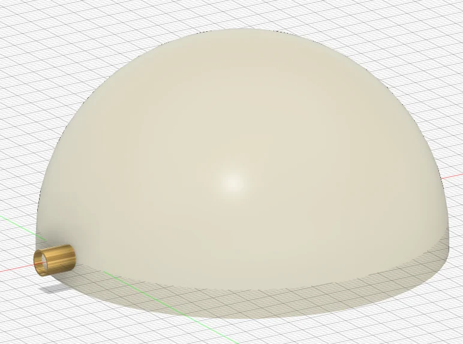
September 17, 2026
Project Sections
1. Introduction
Antenna performance is commonly evaluated first under controlled simulation conditions, where the antenna can be analyzed independently of the surrounding product environment. While this approach is useful for establishing the fundamental behavior of the antenna, practical antennas are rarely operated in isolation. Once integrated into a PCB, enclosure, or larger electronic system, nearby structures can significantly alter the electromagnetic environment around the antenna.
Finite ground planes, feed and connector structures, nearby conductive components, and surrounding dielectric materials can interact with the antenna's near fields. These interactions may shift the resonant frequency, degrade impedance matching, reduce radiation efficiency or realized gain, and modify the radiation pattern. Consequently, an antenna that performs well as an isolated design may require additional optimization after being integrated into the final product.
This project investigates these antenna-integration effects using a previously developed 3 GHz rectangular microstrip patch antenna as the reference design. The isolated antenna provides a known working baseline from which progressively more realistic integration conditions can be introduced and evaluated.
The study focuses on five primary areas. First, the effect of transitioning to a finite PCB ground plane and a more realistic feed and connector structure will be investigated. The antenna will then be exposed to nearby conductive structures to study electromagnetic coupling and detuning caused by metallic objects within the antenna's near-field region. Dielectric loading will subsequently be examined, including the practical case of a simplified protective radome positioned above the antenna. Parametric sweeps of quantities such as object separation, radome spacing, and radome thickness will be used to characterize the antenna's sensitivity to its environment.
For each configuration, changes in resonant frequency, impedance matching, bandwidth, radiation efficiency, realized gain, and radiation pattern will be evaluated. Selected electric-field and surface-current distributions will also be examined to identify the physical mechanisms responsible for the observed changes.
2. Reference Antenna and Baseline Performance
The integration study begins with the previously developed 3 GHz inset-fed rectangular microstrip patch antenna. Before introducing any environmental or packaging effects, the antenna was re-evaluated using a more controlled HFSS solution procedure so that all subsequent integration cases could be compared against a consistent numerical baseline.
The original antenna geometry was retained as the starting point, with only a small adjustment to the patch length required to restore the resonance to approximately 3 GHz under the revised simulation setup. No changes were made to the feed width or inset geometry.
2.1 Reference Geometry
The antenna is implemented on Rogers RO4350B with a relative permittivity of \(\epsilon_r=3.48\) and a substrate thickness of \(h=1.52\ \mathrm{mm}\).
The copper thickness is \(t=0.035\ \mathrm{mm}\).
The final patch dimensions used throughout this study are \(W_p=33.40\ \mathrm{mm}\) and \(L_p=25.21\ \mathrm{mm}.\)
A microstrip feed line with a width of \(W_f=3.48\ \mathrm{mm}\) provides the approximately 50 Ω feed. Impedance matching is achieved using an inset depth of \(L_{\mathrm{inset}}=9.50\ \mathrm{mm},\) with a gap of \(g=0.50\ \mathrm{mm}\) between the feed line and the adjacent patch conductor.
The patch is mounted on a finite substrate and ground plane, which will later be treated as part of the integration study rather than as an ideal infinite ground.
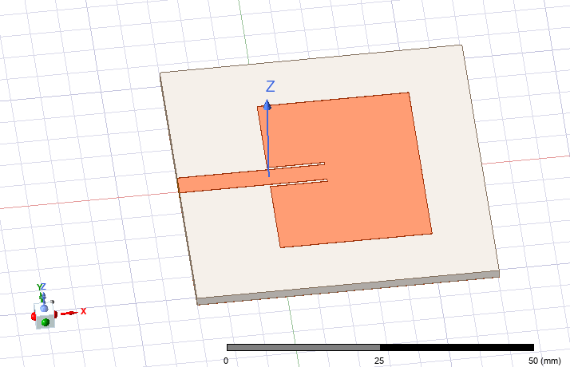
2.2 Baseline Validation and Retuning
The original antenna had previously been optimized using the automatic HFSS solution setup. For the present study, the model was re-evaluated using a controlled adaptive solution with multiple frequencies around the intended operating point and a discrete frequency sweep.
This verification showed that the original patch length produced a resonance slightly below 3 GHz when evaluated using the revised solver configuration. The patch length was therefore reduced from 25.50 mm to 25.21 mm.
The adjustment is consistent with the expected relationship between resonant frequency and effective patch length:
Reducing the patch length therefore increases the resonant frequency.
The feed and inset dimensions were left unchanged because the retuned geometry already produced a strong impedance match at the desired operating frequency.
This retuned configuration is used as the reference antenna throughout the remainder of the integration study.
2.3 Baseline Input Performance
The validated antenna exhibits a minimum reflection coefficient at approximately \(f_r=3.005\ \mathrm{GHz}.\)
The minimum simulated reflection coefficient is \(S_{11,\min}=-33.71\ \mathrm{dB}.\)
At the nominal operating frequency of 3 GHz, \(S_{11}(3\ \mathrm{GHz})\approx -23.44\ \mathrm{dB},\) indicating that the antenna remains very well matched even though the absolute minimum occurs approximately 5 MHz above the target frequency.
The −10 dB bandwidth extends approximately from \(f_L=2.97\ \mathrm{GHz}\) to \(f_H=3.034\ \mathrm{GHz},\) giving an impedance bandwidth of \(BW_{-10\mathrm{dB}}=f_H-f_L\approx 56.7\ \mathrm{MHz}.\)
The corresponding fractional bandwidth is approximately \(FBW=\frac{56.7\ \mathrm{MHz}}{3.0\ \mathrm{GHz}}\times100\approx1.89\%.\)
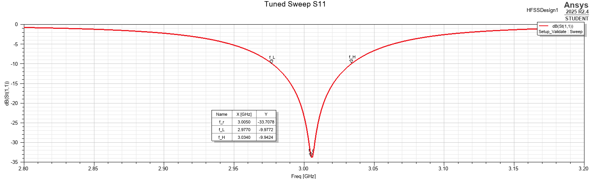
The small 5 MHz offset between the simulated resonance and the nominal 3 GHz design frequency corresponds to approximately \(\frac{5}{3000}\times100\approx0.17\%.\)
This difference is sufficiently small that no further geometric tuning was considered necessary.
2.4 Baseline Radiation Performance
The antenna maintains the expected broadside radiation behavior of the dominant rectangular-patch mode, with the primary radiation directed approximately normal to the patch surface along the positive z-axis.
At 3 GHz, the simulated peak directivity is \(D_{\max}=7.07\ \mathrm{dBi},\) while the peak realized gain is \(G_{\mathrm{realized,max}}=6.29\ \mathrm{dBi}.\)
The corresponding radiation efficiency is \(\eta_{\mathrm{rad}}=83.96\%,\) and the total efficiency is \(\eta_{\mathrm{total}}=83.58\%.\)
The small difference between radiation and total efficiency indicates that mismatch loss remains minor in the reference configuration, consistent with the measured \(S_{11}(3\ \mathrm{GHz})\approx -23.44\ \mathrm{dB}.\)
The difference between directivity and realized gain primarily represents the combined influence of material, conductor, and residual mismatch losses.
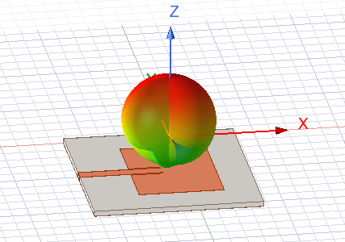
2.5 Reference Performance Summary
The final validated baseline is summarized below.
| Parameter | Reference Value |
|---|---|
| Patch width, \(W_p\) | 33.40 mm |
| Patch length, \(L_p\) | 25.21 mm |
| Resonant frequency, \(f_r\) | 3.005 GHz |
| Minimum \(S_{11}\) | −33.71 dB |
| \(S_{11}\) at 3 GHz | −23.44 dB |
| −10 dB bandwidth | 56.7 MHz |
| Fractional bandwidth | 1.89% |
| Peak directivity | 7.07 dBi |
| Peak realized gain | 6.29 dBi |
| Radiation efficiency | 83.96% |
| Total efficiency | 83.58% |
| Main radiation direction | Broadside, +z |
These values define the electromagnetic baseline for the remainder of the project. Subsequent simulations will alter the antenna's surrounding environment while initially retaining this antenna geometry, allowing changes in resonance, matching, efficiency, gain, and radiation behavior to be measured directly relative to a validated reference configuration.
3. PCB Ground-Plane Sensitivity
The reference antenna uses a finite PCB ground plane rather than an ideal infinite ground. Because the dimensions of this ground plane form part of the electromagnetic environment surrounding the patch, changes in the available PCB area may influence both the antenna input impedance and its radiation behavior.
To investigate this effect, the ground plane was varied independently in two directions while the tuned patch and feed geometry were held fixed. The longitudinal margin beyond the radiating edge of the patch is denoted by \(M_{\mathrm{right}}\), while the lateral margin on either side of the patch is denoted by \(M_y\).
For the reference configuration, \(M_{\mathrm{right}}=10\ \mathrm{mm}\) and \(M_y=10\ \mathrm{mm}.\)
The corresponding PCB dimensions are therefore \(L_{\mathrm{board}}=L_f+L_p+M_{\mathrm{right}}\) and \(W_{\mathrm{board}}=W_p+2M_y.\)
Two parametric studies were performed around this reference geometry. Initial trends were obtained using the faster single-frequency adaptive solution, while selected configurations were subsequently evaluated using the higher-accuracy validation setup introduced in Section 2.
3.1 Longitudinal Ground-Plane Margin
The longitudinal margin was swept over \(M_{\mathrm{right}}=5, 10, 15, 20, 25, 30\ \mathrm{mm},\) while maintaining \(M_y=10\ \mathrm{mm}.\)
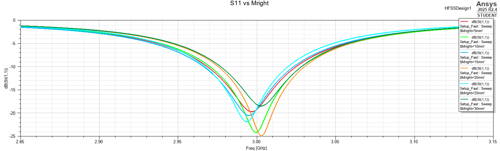
The overlaid reflection-coefficient responses remain closely grouped around 3 GHz throughout the investigated range. The extracted resonant frequency varies only approximately between 2.993 GHz and 3.003 GHz.
The total shift across the complete sweep is therefore only approximately 10 MHz or about 0.33% of the nominal operating frequency.
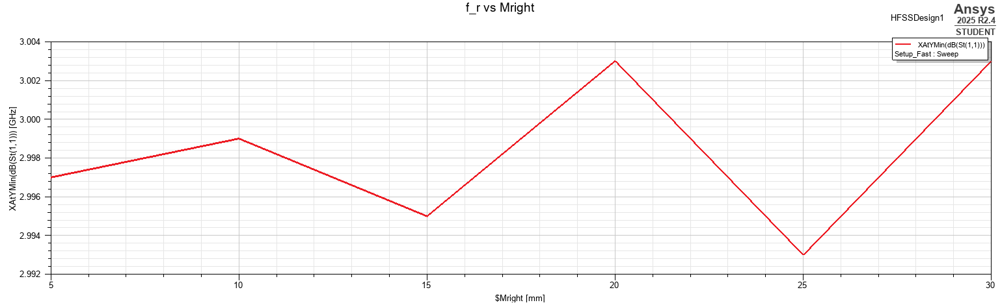
The depth of the impedance match changes more noticeably than the resonance location. The minimum \(S_{11}\) remains approximately between −18.5 dB and −25 dB, with all tested configurations remaining comfortably below the conventional −10 dB matching criterion.
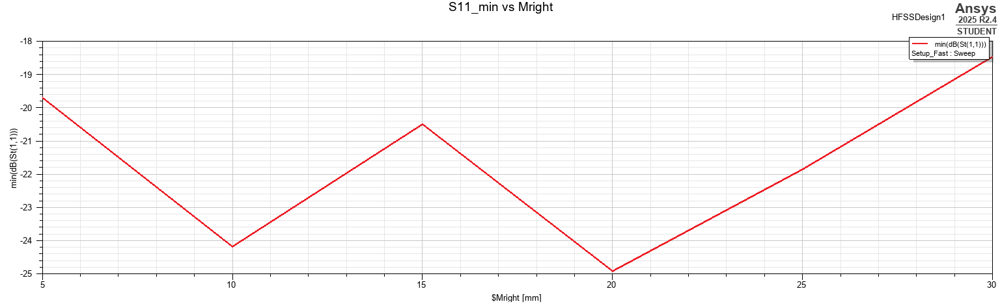
The −10 dB impedance bandwidth also varies with ground-plane length. It initially increases slightly, reaching approximately 58 MHz near \(M_{\mathrm{right}}=10\ \mathrm{mm},\) before gradually decreasing to approximately 51 MHz at \(M_{\mathrm{right}}=30\ \mathrm{mm}.\)
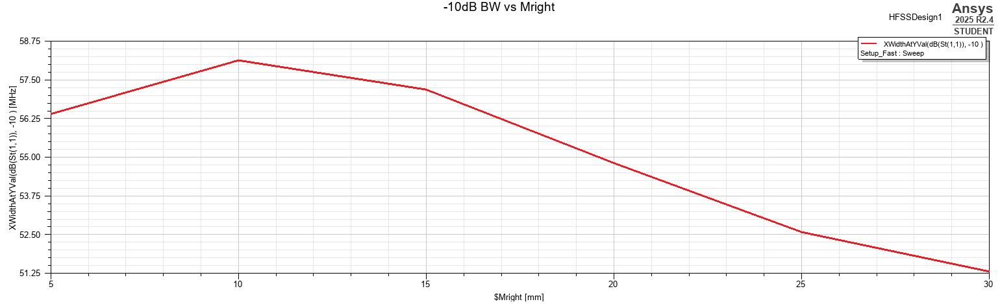
Overall, increasing the ground-plane extension beyond the radiating edge of the patch does not produce substantial antenna detuning. Its primary effect is instead a moderate change in matching and bandwidth.
3.2 Lateral Ground-Plane Margin
The lateral ground-plane margin was then swept over \(M_y=5, 10, 15, 20, 25, 30\ \mathrm{mm},\) while maintaining \(M_{\mathrm{right}}=10\ \mathrm{mm}.\)
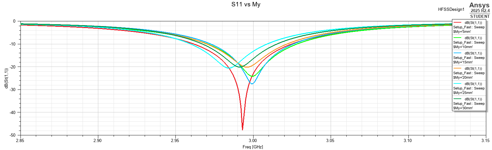
As with the longitudinal sweep, the resonant frequency remains comparatively stable. Across the entire range, \(f_r\approx 2.984\text{–}2.999\ \mathrm{GHz}.\)
The maximum frequency displacement is therefore only approximately 16 MHz or roughly 0.53% of the 3 GHz operating frequency.
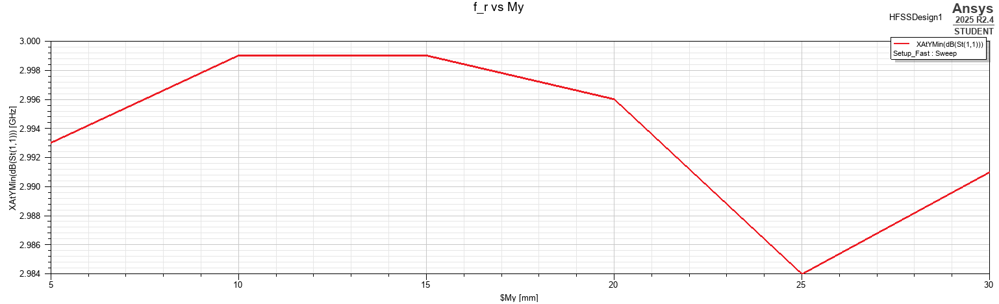
Although the depth of the reflection minimum varies substantially, every tested configuration remains well matched, with \(S_{11,\min}<-20\ \mathrm{dB}.\)
The lateral dimension therefore has only a modest effect on resonance and does not cause loss of impedance matching over the investigated range.
The strongest trend instead appears in the impedance bandwidth.
At \(M_y=5\ \mathrm{mm},\) the −10 dB bandwidth is approximately 63.5 MHz.
As the lateral ground-plane margin increases, the bandwidth decreases almost monotonically, reaching approximately 48.4 MHz at \(M_y=30\ \mathrm{mm}.\)
This corresponds to a reduction of approximately 24%.
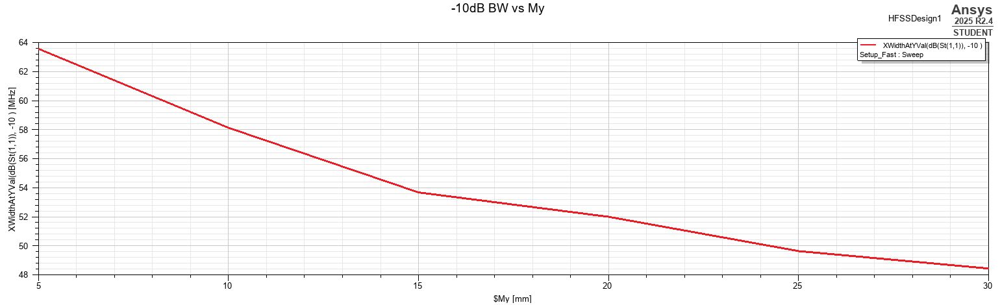
The lateral ground dimension therefore has a considerably stronger influence on bandwidth than the longitudinal extension. This also demonstrates that increasing ground-plane area does not necessarily improve every antenna metric.
3.3 Radiation Performance
Selected extreme configurations were re-evaluated using the higher-accuracy validation setup. The resulting antenna parameters are summarized below.
| \(M_{\mathrm{right}}\) | \(M_y\) | Peak Directivity | Peak Realized Gain | Radiation Efficiency | Total Efficiency |
|---|---|---|---|---|---|
| 5 mm | 10 mm | 7.11 dBi | 6.31 dBi | 83.76% | 83.10% |
| 10 mm | 5 mm | 6.69 dBi | 6.05 dBi | 86.36% | 86.28% |
| 10 mm | 10 mm | 7.07 dBi | 6.31 dBi | 83.92% | 83.88% |
| 10 mm | 30 mm | 7.73 dBi | 6.72 dBi | 80.39% | 79.27% |
| 30 mm | 10 mm | 7.25 dBi | 6.30 dBi | 81.03% | 80.42% |
The longitudinal ground extension again produces only minor changes in the peak radiation characteristics. Increasing \(M_{\mathrm{right}}\) from 55 to 30 mm changes peak realized gain by only approximately 0.01 dB despite modest changes in directivity and efficiency.
The lateral margin produces a much clearer tradeoff.
At \(M_y=5\ \mathrm{mm},\) the antenna exhibits its highest radiation efficiency, \(\eta_{\mathrm{rad}}=86.36\%,\) but a comparatively low peak directivity of 6.69 dBi.
Increasing the lateral margin to \(M_y=30\ \mathrm{mm}\) reduces the radiation efficiency to 80.39% while increasing the peak directivity to 7.73 dBi.
The increase in directivity is sufficiently large that the peak realized gain rises from approximately 6.05 dBi to 6.72 dBi despite the reduction in radiation efficiency.
This result demonstrates that radiation efficiency and peak realized gain do not necessarily vary in the same direction. A geometry may radiate a smaller fraction of accepted power while simultaneously concentrating that radiation more strongly in a particular direction.
3.4 Radiation-Pattern Evolution
The effect of lateral ground-plane size is also visible in the three-dimensional realized-gain patterns.
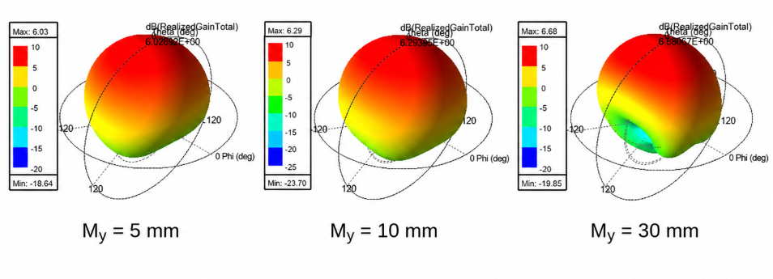
The 55 mm and 10 mm cases retain broadly similar radiation shapes. The 30 mm configuration exhibits a more noticeable redistribution of radiation, particularly in the lower and lateral regions of the pattern, together with a higher broadside peak.
The progression in the simulated peak realized gain, \(6.03\rightarrow 6.29\rightarrow 6.68\ \mathrm{dBi}\) is consistent with the increase in directivity obtained from the validated antenna-parameter results.
The antenna therefore becomes somewhat more directive as the lateral ground-plane dimension increases, even though its radiation efficiency decreases.
3.5 Surface-Current Distribution
To investigate the physical origin of these changes, surface-current magnitude was examined for \(M_y=5, 10, 30\ \mathrm{mm}.\)
The current plots were displayed using a common −20 to 30 dB visualization range. The chosen display range intentionally emphasizes the spatial current distribution rather than the absolute peak magnitude, allowing weaker current paths and edge behavior to remain visible across all three geometries.
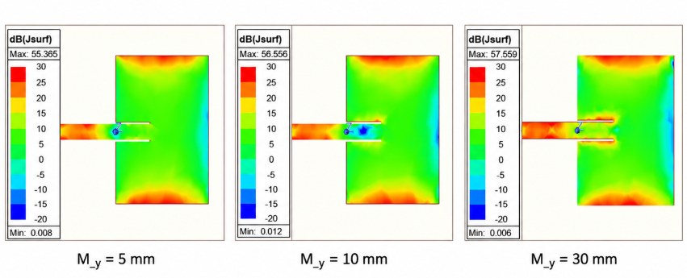
The dominant current distribution on the patch remains qualitatively similar across all three configurations. Strong current regions remain associated with the radiating patch edges and the inset-feed region, indicating that the fundamental patch mode is not substantially altered by the lateral ground-plane sweep.
This is consistent with the relatively small change in resonant frequency observed in the impedance results.
A considerably stronger difference is observed on the ground plane.
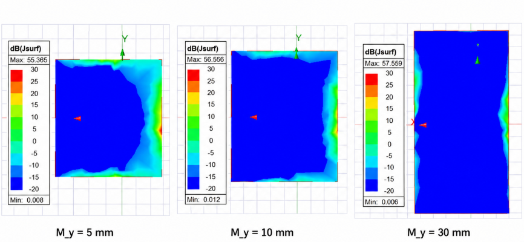
As the available lateral ground area increases, the surface-current distribution spreads over a different region of the ground plane and the relationship between the dominant current distribution and the PCB edges changes significantly.
The patch current remains comparatively stable while the ground-plane current distribution changes, suggesting that the observed variation in directivity, realized gain, and bandwidth is primarily associated with the finite-ground radiation environment rather than with a fundamental change in the patch resonance itself.
The ground plane is therefore not behaving simply as an electrically inert reference conductor. Its dimensions affect the current return path and edge fields and consequently participate in the overall radiation behavior of the antenna.
3.6 Ground-Plane Integration Findings
The two ground-plane sweeps demonstrate that the antenna is considerably more sensitive to the lateral ground dimension than to the longitudinal extension beyond the patch.
The longitudinal margin has only a minor effect on resonant frequency, impedance bandwidth, and peak realized gain. In contrast, increasing the lateral ground-plane extent produces a clear reduction in impedance bandwidth and a significant redistribution of radiation.
The principal observations are therefore:
- Neither ground-plane dimension substantially detunes the fundamental 3 GHz patch resonance over the investigated range.
- The longitudinal ground margin has comparatively little influence on overall antenna performance.
- Increasing lateral ground-plane width reduces the −10 dB impedance bandwidth by approximately 24%.
- A wider lateral ground plane decreases radiation efficiency but increases directivity.
- The directivity increase is sufficient to produce a higher peak realized gain despite the lower efficiency.
- The fundamental patch-current distribution remains similar, while the ground-plane current distribution changes considerably with \(M_y\).
These results illustrate why the PCB ground plane must be treated as part of the antenna system rather than as an independent mechanical boundary. Even when the antenna remains well matched and its resonant frequency changes only slightly, changes to the finite ground geometry can modify bandwidth, efficiency, and radiation behavior.
4. Feed and Connector Integration
The reference antenna developed in the previous sections was initially excited using an idealized port placed directly at the end of the microstrip feed. While this approach is useful during antenna design and optimization, a practical implementation requires a physical transition between the RF source and the PCB.
To investigate the effect of this transition, the ideal excitation was replaced with a simplified coaxial connector model. The study was performed in two stages. First, the coaxial transmission line was modeled and validated independently. The validated coax geometry was then integrated with the antenna through a simplified edge-launch transition.
The purpose of this study was not to reproduce a specific commercial SMA connector in full mechanical detail, but rather to introduce the principal electromagnetic features of a realistic RF feed:
The outer conductor of the coax was simultaneously connected to the PCB ground plane, providing the corresponding RF return path.
4.1 Standalone Coaxial-Line Model
Before integrating the connector with the antenna, the coaxial section was simulated independently as a two-port transmission line. This allowed the coax geometry and port definition to be verified without the additional influence of the antenna or launch discontinuity.
The coax was constructed using a copper center conductor of radius \(a=0.50\ \mathrm{mm}\) surrounded by PTFE with relative permittivity \(\epsilon_r=2.1.\)
The inner radius of the outer conductor was selected as \(b\approx 1.67\ \mathrm{mm}\).
For an ideal coaxial line, \(Z_0=\frac{60}{\sqrt{\epsilon_r}}\ln\left(\frac{b}{a}\right),\) which gives approximately \(Z_0\approx 50 \Omega.\)
The copper outer conductor was assigned a finite wall thickness, while a coaxial length of Lcoax=10 mm was used for the validation model.
Terminal wave ports were placed at both ends of the uniform line.
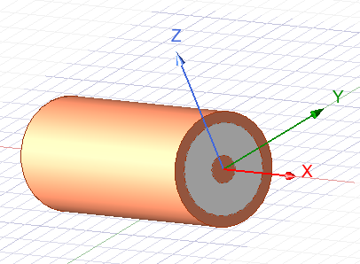
The simulated characteristic impedance remained essentially constant over the investigated frequency range:
The line was also very well matched, with approximately \(S_{11}\approx S_{22}\approx -45.1\ \mathrm{dB}\) at 3 GHz.
The forward transmission was \(S_{21}\approx -0.0064\ \mathrm{dB},\) indicating negligible attenuation over the short coaxial section.
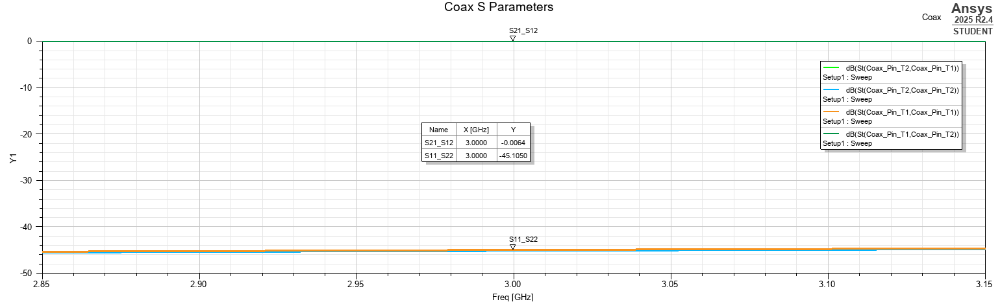
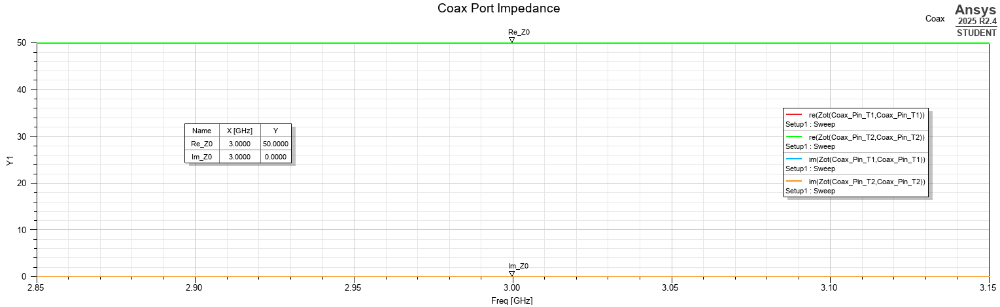
These results establish that the coax itself behaves as an approximately ideal 50 Ω transmission line. Consequently, any significant changes observed after antenna integration can primarily be attributed to the connector-to-microstrip transition and the resulting modification of the antenna environment.
4.2 Coax-to-Microstrip Integration
The validated coaxial geometry was then transferred into the antenna model.
The antenna geometry itself remained unchanged from the reference design, including \(L_p=25.21\ \mathrm{mm}, W_p=33.40\ \mathrm{mm},\) and \(W_f=3.48\ \mathrm{mm}.\)
The reference ground-plane dimensions were also retained:
The coax was positioned along the microstrip-feed axis and terminated at the PCB edge. The PTFE dielectric and coax outer conductor stopped at the board boundary, while the center conductor extended beyond the coax body and contacted the microstrip feed.
Because the original microstrip extended directly to the PCB edge, its end was shortened slightly to provide clearance between the signal trace and grounded connector structure. The center pin then bridged the resulting launch region and was electrically united with the microstrip feed.
The outer coax conductor was connected to the PCB ground plane using symmetric conductive ground contacts.
The resulting signal path is therefore:
The corresponding return path is:
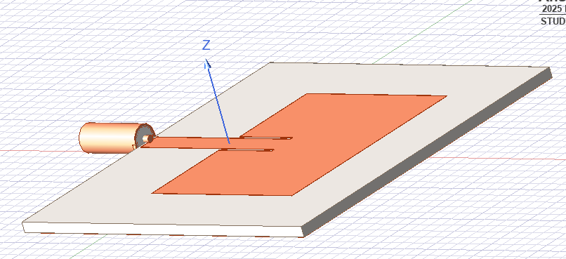
This transition proved particularly important during model development. Direct contact between the microstrip signal conductor and grounded connector structure produced an almost complete reflection, \(S_{11}\approx 0\ \mathrm{dB},\) together with a nearly purely reactive input impedance. Introducing physical clearance between the signal launch and grounded connector body restored the expected antenna resonance.
This illustrates an important practical aspect of antenna integration: a geometrically small launch-region error can dominate the behavior of an otherwise correctly designed antenna.
4.3 Validated Input Performance
Following initial debugging using the faster solution setup, the final connector-fed geometry was evaluated using the same higher-accuracy validation procedure used for the reference antenna.
The validated connector-fed antenna exhibits its minimum reflection coefficient at approximately \(f_r=3.019\ \mathrm{GHz}.\)
The minimum return loss is \(S_{11,\min}=-36.47\ \mathrm{dB}.\)
The −10 dB crossing frequencies are approximately \(f_L=2.990\ \mathrm{GHz}\) and \(f_H=3.048\ \mathrm{GHz}.\)
The resulting impedance bandwidth is therefore \(BW_{-10\mathrm{dB}}=f_H-f_L\approx 58\ \mathrm{MHz}.\)
The fractional bandwidth is approximately \(FBW=\frac{58\ \mathrm{MHz}}{3.0\ \mathrm{GHz}}\times100\approx1.93\%.\)
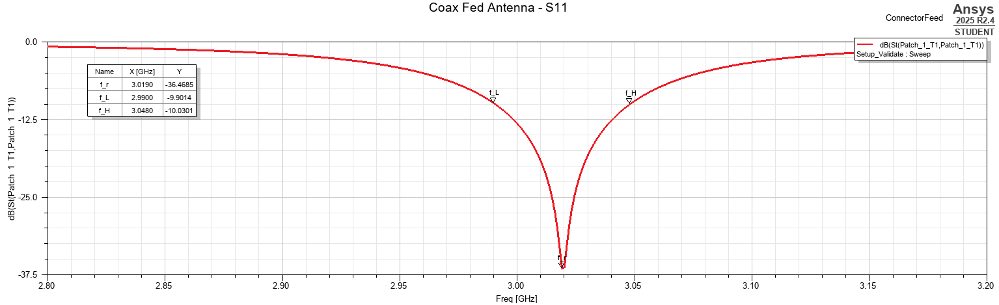
Compared with the ideal-feed reference, \(f_{r,\mathrm{ideal}}=3.005\ \mathrm{GHz},\) the physical coax launch shifts the resonant frequency upward by only approximately 14 MHz Relative to the 3 GHz operating frequency, this corresponds to \(\frac{14}{3000}\times100\approx0.47\%.\)
The impedance bandwidth also remains very similar:
The physical connector therefore introduces only a modest perturbation to the antenna input impedance once the launch is constructed correctly.
4.4 Radiation Performance
The far-field characteristics of the connector-fed antenna were evaluated at 3 GHz using the validated solution.
The peak directivity is \(D_{\max}=6.83\ \mathrm{dBi},\) while the peak realized gain is \(G_{\mathrm{realized,max}}=6.00\ \mathrm{dBi}.\)
The corresponding radiation efficiency is \(\eta_{\mathrm{rad}}=86.83\%,\) and the total efficiency is \(\eta_{\mathrm{total}}=82.63\%.\)
For comparison, the ideal-feed reference produced \(D_{\max}=7.07\ \mathrm{dBi},\) and \(\eta_{\mathrm{total}}=83.58\%.\)
The connector-fed model therefore shows a small reduction in directivity and peak realized gain, while maintaining a broadly comparable overall radiation performance.
Interestingly, the simulated radiation efficiency increases slightly, while total efficiency decreases slightly. This distinction reflects the different quantities represented by the two efficiency metrics. Radiation efficiency characterizes losses after power has been accepted by the antenna, whereas total efficiency also includes mismatch effects at the input.
The physical launch therefore changes both the electromagnetic environment and the distribution of accepted power, even though the antenna remains strongly matched.
4.5 Radiation Pattern
The connector-fed antenna retains the expected broadside radiation behavior.
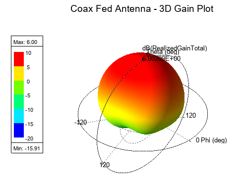
The peak realized gain is approximately 6.00 dBi and the main lobe remains directed approximately along the positive z-axis.
The overall pattern remains similar to that of the ideal-feed reference, indicating that the connector does not fundamentally change the dominant patch radiation mode. The modest decrease in peak realized gain is instead associated with smaller changes to the current distribution and radiation pattern produced by the physical launch and ground connection.
4.6 Launch-Region Surface Current
The surface-current distribution was examined at 3 GHz to visualize how the coaxial excitation couples into the microstrip feed.
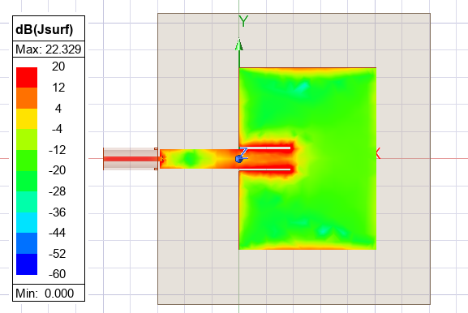
Strong current is visible along the center-pin transition and microstrip feed, particularly around the inset region and the nearby patch edges. The current then spreads into the characteristic patch-mode distribution.
The connector therefore introduces a localized perturbation at the feed point, but the current distribution over the main patch remains consistent with the intended resonant mode.
This is consistent with the impedance and radiation results: the launch modifies the local electromagnetic environment without fundamentally changing the operating mechanism of the antenna.
The surface-current plot is displayed on a logarithmic dB scale so that both the strong launch current and weaker current paths across the patch remain visible.
4.7 Comparison with the Ideal Feed
The main effects of replacing the ideal excitation with the physical coax launch are summarized below.
| Parameter | Ideal Feed | Coax Feed |
|---|---|---|
| Resonant frequency | 3.005 GHz | 3.019 GHz |
| Minimum \(S_{11}\) | −33.71 dB | −36.47 dB |
| −10 dB bandwidth | 56.7 MHz | 58 MHz |
| Fractional bandwidth | 1.89% | 1.93% |
| Peak directivity | 7.07 dBi | 6.83 dBi |
| Peak realized gain | 6.29 dBi | 6.00 dBi |
| Radiation efficiency | 83.96% | 86.83% |
| Total efficiency | 83.58% | 82.63% |
The most significant observation is that the physical connector transition produces only modest degradation after the launch geometry is correctly implemented.
The resonance remains close to the intended 3 GHz frequency, the impedance bandwidth is essentially preserved, and the peak realized gain decreases by only approximately 0.29 dB.
The exercise also demonstrates that correct grounding and signal clearance at the connector transition are critical. During integration, unintended contact between the signal path and grounded connector structure completely suppressed the antenna resonance. Once the launch geometry was corrected, normal antenna behavior was recovered.
The connector should therefore be regarded as part of the RF system rather than simply as an external mechanical interface. Even when the coaxial line itself is accurately matched to 50 Ω, the geometry of the transition between coax, microstrip, and ground can strongly influence the antenna input impedance and radiation behavior.
5. Radome and Dielectric-Cover Detuning
The final integration study examined the effect of placing a dielectric cover above the connector-fed patch antenna. In a practical product, the radiating element is rarely exposed directly to free space; it is typically placed beneath a plastic cover, enclosure wall, or radome. Even when such a structure is electrically nonconductive, its proximity to the antenna can alter the local electromagnetic environment and shift the antenna response.
To isolate this effect, a simple rectangular dielectric slab was positioned parallel to the PCB above the patch. The slab was intentionally modeled as a floating cover rather than a complete enclosure, allowing the influence of dielectric loading to be studied independently from sidewalls, mounting hardware, or additional structural features.
The radome was parameterized by its thickness, \(t_{\mathrm{radome}}\), its separation from the patch, \(d_{\mathrm{radome}}\), and its relative permittivity, \(\epsilon_r\),radome.
The nominal radome thickness was \(t_{\mathrm{radome}}=1.5\ \mathrm{mm}.\)
The slab extended beyond the patch by approximately 5 mm on each side, ensuring that the dominant near field interacted with the dielectric cover rather than with an artificially close slab edge.
The separation distance was defined from the top surface of the patch copper to the lower surface of the dielectric slab.
5.1 Radome Spacing Study
The first study examined the effect of radome height while keeping the dielectric properties fixed at approximately \(\epsilon_r=2.5.\)
The separation was swept over \(d_{\mathrm{radome}}=2, 5, 10, 20, 30\ \mathrm{mm}.\)
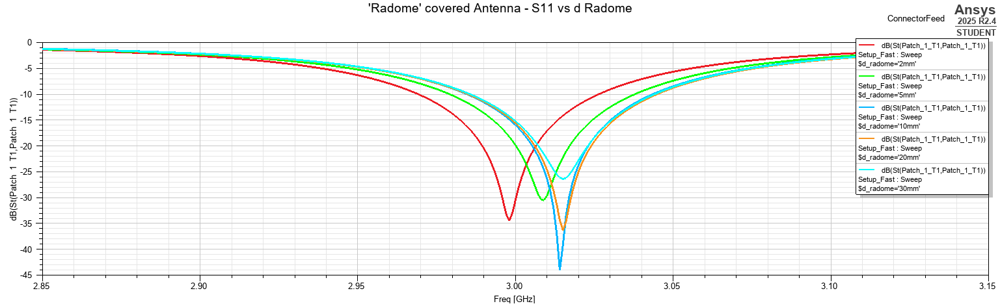
The strongest effect occurs when the dielectric slab is positioned closest to the patch. As the cover is moved farther away, the antenna response progressively approaches the no-radome reference.
The extracted resonant frequency varies approximately from \(f_r\approx 2.998\ \mathrm{GHz}\) at \(d_{\mathrm{radome}}=2\ \mathrm{mm}\) to approximately \(f_r\approx 3.015\ \mathrm{GHz}\) for the larger separation distances.
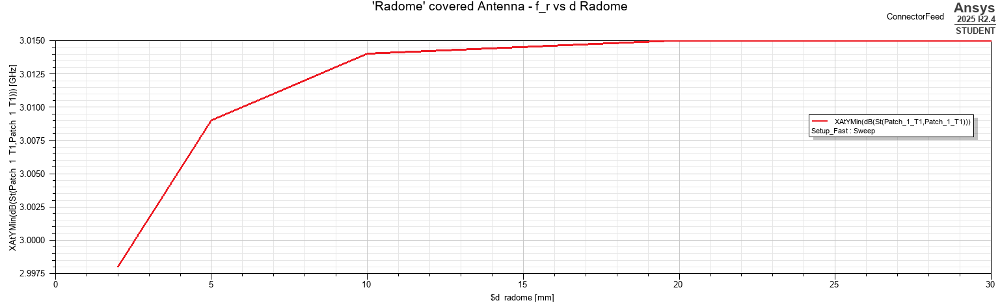
The downward shift observed at small spacing is consistent with increased dielectric loading. A nearby dielectric increases the effective permittivity experienced by the fringing fields around the patch, increasing the effective electrical length of the antenna and therefore reducing its resonant frequency.
As the radome is moved farther away, its interaction with the strongest near-field region decreases and the frequency shift becomes progressively smaller.
The −10 dB bandwidth changes only modestly over the sweep. It varies approximately between 57.4 MHz and 60.1 MHz.
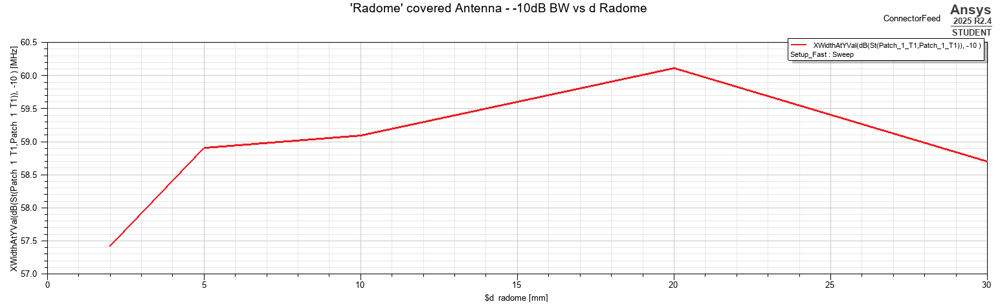
This indicates that the radome spacing primarily affects the resonance location rather than fundamentally changing the impedance bandwidth.
The value of \(S_{11}\) at exactly 3 GHz also changes substantially because the resonance itself is moving relative to the fixed operating frequency.
For the closest radome spacing, \(d_{\mathrm{radome}}=2\ \mathrm{mm},\) the resonance is pulled closer to 3 GHz and the match at the nominal operating frequency improves significantly.
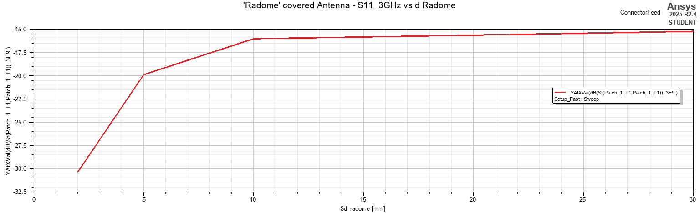
The spacing sweep therefore demonstrates a clear near-field interaction:
5.2 Radome Permittivity Study
The second parametric study investigated the effect of the dielectric constant while holding the radome spacing fixed at \(d_{\mathrm{radome}}=5\ \mathrm{mm}.\)
The relative permittivity was varied over approximately \(\epsilon_r=1.5, 2.0, 2.5, 3.0, 3.5, 4.0.\)
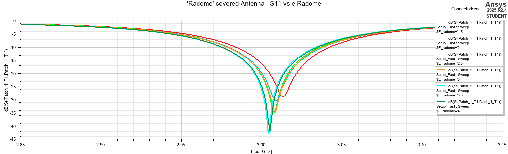
Increasing the dielectric constant generally shifts the antenna resonance downward, although the finite geometry produces some small non-monotonic variation between neighboring points.
The resonant frequency remains within a relatively narrow range, approximately 3.004–3.013 GHz.
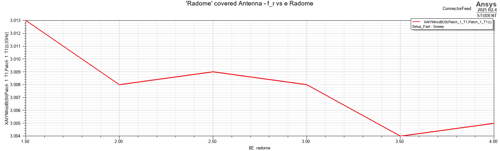
The total resonance movement is therefore only on the order of 8–9 MHz demonstrating that, for the chosen 1.5 mm radome thickness and 5 mm air gap, material permittivity produces only moderate detuning.
The impedance bandwidth again remains relatively stable:
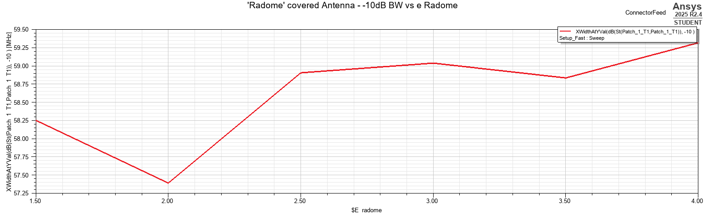
The strongest practical effect is visible in the match at the fixed operating frequency. As the higher-permittivity materials pull the resonance closer to 3 GHz, \(S_{11}\)(3 GHz) improves, reaching approximately −26 dB for the higher-permittivity cases.
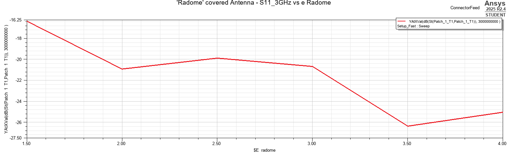
The permittivity sweep therefore supports the same physical interpretation as the spacing study:
However, because the slab is separated from the patch by several millimeters, the resulting detuning remains limited.
5.3 Validated Close-Radome Case
A representative close-cover configuration was selected for higher-accuracy validation:
The validated resonance occurs at approximately \(f_r=3.005\ \mathrm{GHz}.\)
The minimum reflection coefficient is \(S_{11,\min}=-38.14\ \mathrm{dB}.\)
The −10 dB crossing frequencies are approximately \(f_L=2.976\ \mathrm{GHz}\) and \(f_H=3.033\ \mathrm{GHz},\) giving \(BW_{-10\mathrm{dB}}\approx 57\ \mathrm{MHz}.\)
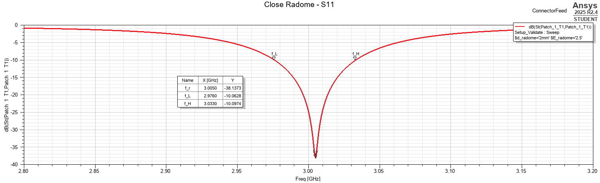
At 3 GHz, the simulated radiation parameters are approximately \(D_{\max}=6.96\ \mathrm{dBi},\) and \(\eta_{\mathrm{total}}=86.62\%.\)
The corresponding three-dimensional gain pattern retains the expected broadside character.
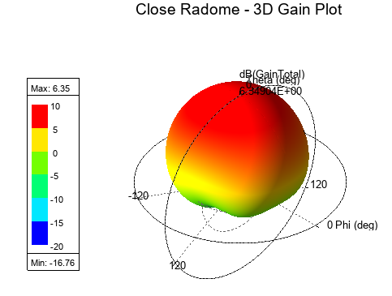
The nearby radome therefore does not fundamentally distort the radiation mechanism of the patch. Instead, it modifies the local dielectric environment and slightly alters the operating point.
5.4 Validated High-Permittivity Case
A second validation case was selected to represent stronger dielectric loading:
The validated resonant frequency is approximately \(f_r=3.011\ \mathrm{GHz},\) with \(S_{11,\min}=-37.72\ \mathrm{dB}.\)
The −10 dB frequencies are approximately \(f_L=2.981\ \mathrm{GHz}\) and \(f_H=3.040\ \mathrm{GHz},\) which gives \(BW_{-10\mathrm{dB}}\approx 59\ \mathrm{MHz}.\)
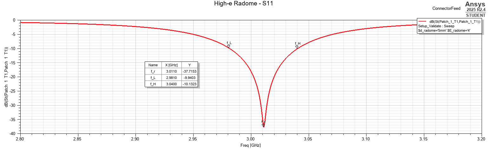
At 3 GHz, \(D_{\max}=6.93\ \mathrm{dBi},\) and \(\eta_{\mathrm{total}}=85.83\%.\)
The radiation pattern again remains broadside and closely resembles the connector-fed reference.
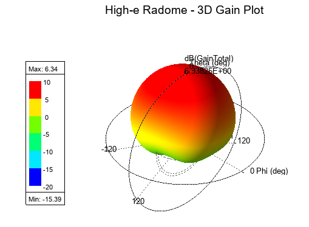
5.5 Comparison with the Connector-Fed Baseline
The validated radome cases can be compared directly with the connector-fed antenna without a cover.
| Parameter | No Radome | Close Radome | High-\(\epsilon_r\) Radome |
|---|---|---|---|
| \(d_{\mathrm{radome}}\) | — | 2 mm | 5 mm |
| \(\epsilon_r\) | — | 2.5 | 4.0 |
| Resonant frequency | 3.019 GHz | 3.005 GHz | 3.011 GHz |
| Minimum \(S_{11}\) | −36.47 dB | −38.14 dB | −37.72 dB |
| −10 dB bandwidth | 58 MHz | 57 MHz | 59 MHz |
| Peak directivity | 6.83 dBi | 6.96 dBi | 6.93 dBi |
| Peak realized gain | 6.00 dBi | 6.33 dBi | 6.27 dBi |
| Radiation efficiency | 86.83% | 86.92% | 87.19% |
| Total efficiency | 82.63% | 86.62% | 85.83% |
The radome does not significantly degrade the antenna in either validated configuration.
In fact, both dielectric-cover cases shift the resonance closer to the intended 3 GHz operating frequency and slightly increase the realized gain at 3 GHz.
This result highlights an important practical point: a radome is not necessarily only a source of degradation. Depending on its geometry, dielectric constant, thickness, and spacing, the cover can alter the antenna environment in a way that partially compensates for existing detuning.
The close-radome case, for example, moves the resonance from 3.019 GHz to 3.005 GHz while increasing peak realized gain from approximately 6.00 dBi to 6.33 dBi.
The overall radiation pattern remains similar, indicating that the dielectric slab primarily modifies the electromagnetic loading rather than introducing a new radiation mode.
5.6 Radome Integration Findings
The radome study demonstrates that both dielectric spacing and material permittivity influence antenna performance, but the magnitude of the effect depends strongly on the strength of near-field coupling.
The principal observations are:
- Reducing the radome-to-patch spacing increases dielectric loading and shifts the resonance downward.
- Increasing radome permittivity produces a similar trend, although the effect is more modest at the investigated spacing.
- The −10 dB bandwidth remains comparatively stable throughout both sweeps.
- The radiation pattern retains its broadside form for the validated radome configurations.
- Neither validated radome case causes significant degradation in radiation efficiency.
- The dielectric cover can actually improve the operating-point match and realized gain when its loading shifts the antenna closer to the target frequency.
The radome should therefore be treated as part of the antenna electromagnetic environment rather than as a mechanically independent cover.
Even a simple dielectric slab changes the effective boundary conditions experienced by the patch. For a production design, the final antenna geometry should therefore be optimized and validated together with the intended radome or enclosure rather than in isolation.
6. Full Mechanical Integration Model
The final stage of the project moved from simplified electromagnetic representations toward a mechanically realistic antenna assembly. The objective was to determine whether the antenna would continue to operate acceptably once the connector, PCB, solder connection, and enclosure were represented as a complete product-level geometry rather than as idealized primitives.
A mechanical assembly was first created in Fusion 360 and then imported into HFSS for electromagnetic analysis. The model included the finite PCB, inset-fed patch antenna, realistic SMA-style connector, connector ground structure, center conductor, a simplified solder connection to the microstrip feed, and a domed dielectric radome.
The final model was intentionally simplified where manufacturing details were not electromagnetically important. Features such as connector threads, internal spring contacts, and small cosmetic chamfers were omitted because they would significantly increase geometric and meshing complexity without materially improving the accuracy of the 3 GHz antenna-integration study.
6.1 Mechanical Assembly
The SMA connector was represented using the principal electromagnetic regions required for a realistic coaxial transition:
The connector model includes an outer grounded body, PTFE dielectric, a center conductor, and a PCB mounting structure.
The mounting body and outer connector shell were electrically connected and treated as a common ground conductor. The center pin remained isolated from this structure and formed the signal path into the antenna.
The connector center pin was extended over the PCB feed region and connected to the microstrip through a simplified solder joint. This ensured a physically continuous RF path while avoiding the need to reproduce the detailed shape of a real solder fillet.
The resulting signal path was therefore:
Similarly, the connector mounting structure was electrically connected to the PCB ground plane:
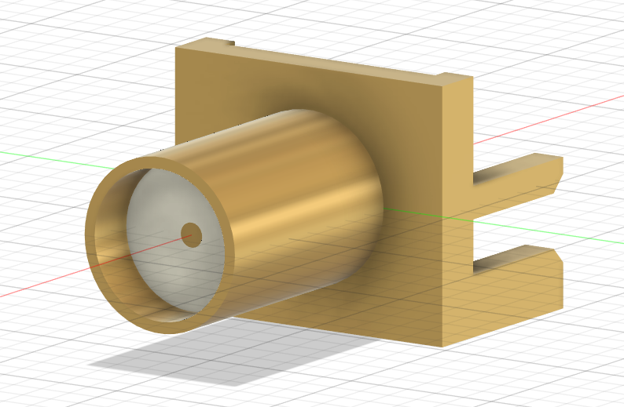
The complete assembly was then enclosed by a smooth domed radome. The SMA mating interface remained exposed outside the enclosure, while the radiating structure and PCB were contained within the dielectric shell.
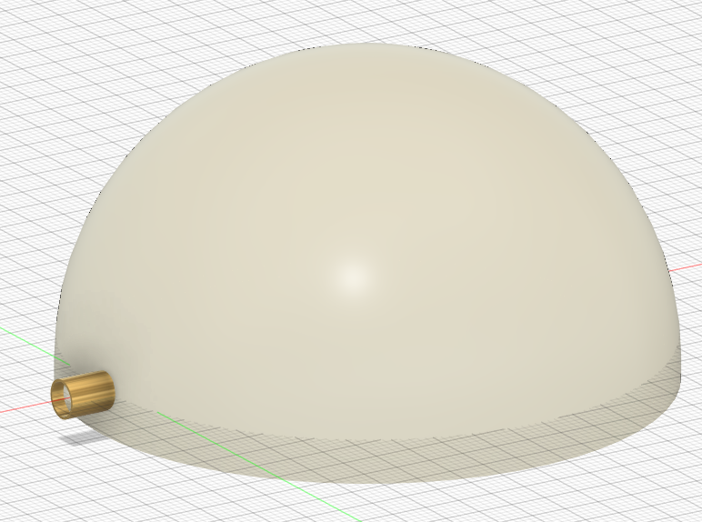
A cross-sectional view of the enclosure was also used to verify the relative positioning of the patch, feed, connector, PCB, and radome.
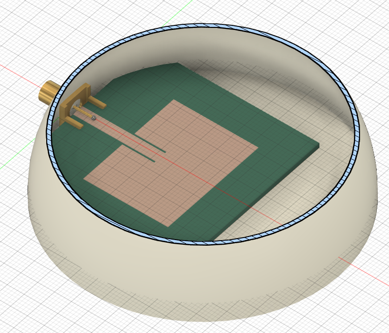
6.2 HFSS Import and Electromagnetic Model
The mechanical assembly was exported from Fusion 360 and imported into HFSS as separate solid bodies. The imported components were grouped according to their electromagnetic function.
The conducting regions were organized into a signal path through the center pin, solder joint, feed, and patch, and a ground path through the connector body, mounting structure, and PCB ground plane.
The dielectric regions remained separate: PTFE, the PCB substrate, and the radome.
The radome was modeled using the same generic dielectric properties used in the previous parametric study, \(\epsilon_r=2.5, \tan\delta=0.002.\)
The imported geometry was checked for unintended intersections before simulation. Particular attention was given to the SMA pass-through region, where the radome, connector, substrate, and PTFE bodies must remain geometrically distinct while preserving the intended electrical contacts.
The final model therefore represented a substantially more realistic electromagnetic environment than the simplified slab-radome case while retaining sufficiently clean geometry for reliable meshing.
6.3 Final Input Response
The complete mechanical model was simulated over the frequency range surrounding the intended 3 GHz operating point.
The final resonant frequency was found to be approximately \(f_r=3.062\ \mathrm{GHz}.\)
The minimum reflection coefficient was \(S_{11,\min}\approx -22.05\ \mathrm{dB}.\)
The −10 dB crossing frequencies occurred at approximately \(f_L=3.040\ \mathrm{GHz}\) and \(f_H=3.084\ \mathrm{GHz}.\)
The resulting impedance bandwidth is therefore \(BW_{-10\mathrm{dB}} = f_H - f_L \approx 44\ \mathrm{MHz}.\)
The corresponding fractional bandwidth is approximately \(FBW=\frac{44\ \mathrm{MHz}}{3.062\ \mathrm{GHz}}\times100\approx1.44\%.\)
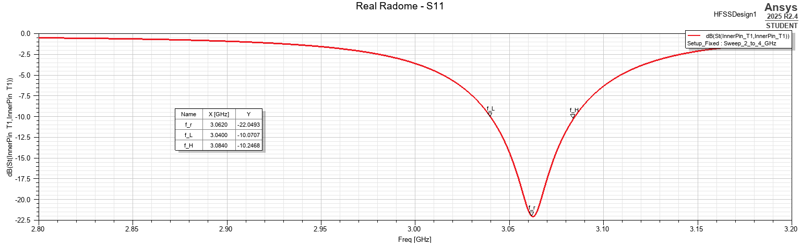
Compared with the earlier connector-fed and simplified-radome cases, the complete enclosure produces a more noticeable upward shift in resonant frequency and a reduction in matched bandwidth.
The resonance moves from the connector-fed value of approximately 3.019 GHz to 3.062 GHz corresponding to a shift of approximately 43 MHz.
This demonstrates that the full enclosure cannot be represented perfectly by a simple flat dielectric slab. The curved radome surrounds a much larger portion of the antenna near field and therefore modifies the electromagnetic environment in a different way.
6.4 Radiation Performance
Despite the more complex mechanical environment, the radiation performance remained strong.
Near resonance, at approximately 3.05 GHz, the simulated antenna parameters were \(D_{\max} \approx 6.81\ \mathrm{dBi}, G_{\mathrm{realized,max}} \approx 6.18\ \mathrm{dBi}, \eta_{\mathrm{rad}} \approx 87.19\%,\) and \(\eta_{\mathrm{total}}\approx 86.53\%.\)
These results show that the full mechanical assembly does not introduce a significant radiation-efficiency penalty. The realized gain also remains above 6 dBi, indicating that the antenna continues to radiate effectively despite the additional connector and enclosure geometry.
The three-dimensional radiation pattern retains the expected broadside character of the rectangular patch.
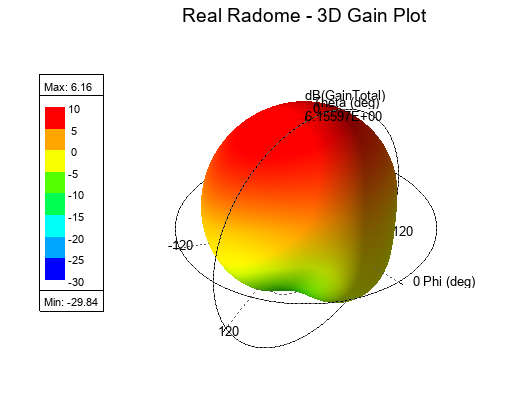
The peak simulated gain is approximately 6.16 dBi.
Although some pattern modification is visible relative to the ideal patch, the enclosure does not produce a fundamentally different radiation mode or strongly redirect the main beam.
6.5 Surface-Current Verification
Surface-current density was examined to verify that the antenna continued to operate through the intended patch mode after the mechanical structures were introduced.
The current distribution remains concentrated around the feed region and along the characteristic patch-current paths. Strong current is also visible along the SMA launch and connector transition, as expected for the RF excitation path.
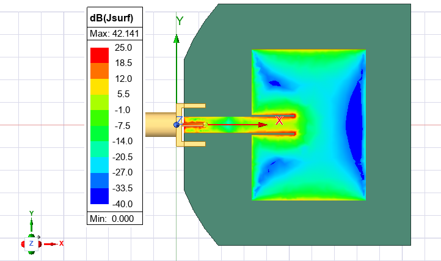
The dominant current structure across the patch remains consistent with that observed in the earlier antenna simulations. This confirms that the radiating mechanism is still governed primarily by the patch rather than by the enclosure or connector geometry.
The mechanical additions therefore modify the loading and impedance response without fundamentally changing the antenna mode.
6.6 Comparison with Earlier Integration Stages
The progression from the simplified connector-fed model to the complete mechanical assembly can be summarized as follows.
| Parameter | Connector-Fed | Close Radome | High-\(\epsilon_r\) Radome | Full Mechanical Model |
|---|---|---|---|---|
| \(f_r\) | 3.019 GHz | 3.005 GHz | 3.011 GHz | 3.062 GHz |
| \(S_{11,\min}\) | −36.47 dB | −38.14 dB | −37.72 dB | −22.05 dB |
| −10 dB BW | 58 MHz | 57 MHz | 59 MHz | 44 MHz |
| Peak Directivity | 6.83 dBi | 6.96 dBi | 6.93 dBi | 6.81 dBi |
| Peak Realized Gain | 6.00 dBi | 6.33 dBi | 6.27 dBi | 6.18 dBi |
| Radiation Efficiency | 86.83% | 86.92% | 87.19% | 87.19% |
| Total Efficiency | 82.63% | 86.62% | 85.83% | 86.53% |
The largest change introduced by the final product geometry is therefore not a severe reduction in radiation efficiency, but rather a shift in resonant frequency and a reduction in impedance bandwidth.
The antenna still retains approximately 6.2 dBi of realized gain and approximately 87% radiation efficiency, showing that it remains an efficient radiator inside the mechanically realistic enclosure.
6.7 Final Integration Findings
The complete mechanical model demonstrates the importance of evaluating an antenna within its intended product environment.
The simplified radome studies correctly showed that nearby dielectric material modifies antenna resonance. However, the final curved enclosure produces a different response than the flat-slab approximation because it surrounds a much larger portion of the antenna and interacts with the fields over a broader volume.
The main effects of the final integration were:
- The resonant frequency shifted upward to approximately 3.062 GHz.
- The −10 dB bandwidth narrowed to approximately 44 MHz.
- Approximately 6.2 dBi realized gain and 87% radiation efficiency were preserved.
- The broadside radiation pattern and characteristic patch surface-current distribution were retained.
The result shows that the antenna remains fully functional after realistic mechanical integration, but also demonstrates why the antenna cannot be treated independently of its enclosure and feed structure.
A practical product design would therefore use the complete assembly as the final optimization environment. The patch dimensions or feed geometry could be retuned in the presence of the enclosure so that the fully integrated antenna resonates directly at the desired operating frequency.
The complete design progression can therefore be summarized as:
This final stage closes the project by demonstrating the transition from an isolated antenna design to a mechanically realistic, electromagnetically validated integrated product.
7. Conclusion
This project investigated how a rectangular microstrip patch antenna changes as it is moved from an isolated electromagnetic design toward a more realistic integrated product.
The study began with a validated 3 GHz inset-fed patch antenna and progressively introduced practical integration effects, including finite PCB dimensions, a physical coaxial/SMA launch, nearby dielectric loading, and finally a mechanically realistic domed radome and connector assembly.
The finite-ground study showed that the antenna was more sensitive to lateral ground-plane dimensions than to longitudinal extension. Changes in lateral ground width produced noticeable variations in bandwidth, directivity, efficiency, and ground-current distribution, while longitudinal changes had a comparatively smaller effect.
Replacing the ideal feed with a physical coaxial launch demonstrated the importance of correctly modeling the connector transition. Improper clearance between the signal path and connector ground initially produced a near-short condition, while a corrected launch preserved the expected resonance and broadside radiation pattern. The validated connector-fed antenna retained approximately 6.0 dBi realized gain and 87% radiation efficiency.
The radome study then showed that nearby dielectric material can alter antenna resonance without necessarily degrading radiation performance. Reduced radome spacing increased dielectric loading and shifted the resonance downward, while higher dielectric constant produced a similar but weaker effect for the investigated geometry. In the validated cases, the dielectric loading actually moved the resonance closer to the intended 3 GHz operating point and slightly improved the realized gain at 3 GHz.
The final mechanical integration model combined a realistic SMA-style connector, soldered feed transition, finite PCB, and domed dielectric enclosure. In this configuration, the antenna resonated at approximately 3.062 GHz with \(S_{11,\min}\approx -22.05\ \mathrm{dB},\) a −10 dB bandwidth of approximately 44 MHz peak realized gain of approximately 6.18 dBi and radiation efficiency of approximately 87.2%.
The dominant broadside radiation pattern and characteristic patch-current distribution were preserved, indicating that the antenna continued to operate through the intended patch mode despite the significantly more realistic surrounding structure.
The overall study therefore demonstrates that antenna performance cannot be evaluated independently from its mechanical environment. Ground-plane dimensions, connector geometry, dielectric covers, and enclosure shape all modify the electromagnetic boundary conditions seen by the antenna and can shift its final operating point.
A practical product-development process should therefore follow the same general progression used in this project:
The final integrated model remained electrically functional without retuning, although the upward shift in resonant frequency and reduced impedance bandwidth indicate that a production design would benefit from a final optimization of the patch or feed geometry with the complete enclosure present.
Future work could extend the study by retuning the antenna directly inside the final mechanical assembly, investigating alternative radome materials and wall thicknesses, or comparing other antenna topologies that may provide wider bandwidth or reduced sensitivity to the surrounding enclosure.